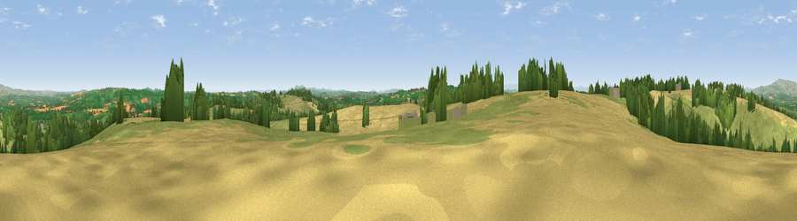

Viewpoint near Thornbury
#8091 in England · top 20% of its area beats it · near Thornbury · access?Where it is
The exact computed spot (SO 61600 61225). Click the marker for map links.
Public access: no public right of way or access land is recorded at this exact spot — it may be on private land. Computed from Natural England's CRoW access layer and OpenStreetMap rights of way — not the legal definitive map. Always verify locally.
The view, rendered

A 360° render of this exact spot computed from the terrain model, tree cover and land cover — summer colours, afternoon light, calibrated against photographs of famous viewpoints. Real trees, hedges and buildings will differ in detail.
The panorama
Grey silhouette: terrain skyline in each direction (720 bearings, Earth curvature and refraction included). Dashed green: skyline with trees (+15 m) and buildings (+8 m) as obstacles. Blue strip: how far the ground is visible on each bearing.
Where the view opens
Wedge length = distance to the farthest visible ground on that bearing (vegetation-aware). Rings at 10, 25 and 50 km.
What fills the view
48% grassland · 35% cropland · 17% woodland
Angular shares of the visible panorama (visual magnitude), not map area. Landscape diversity 0.45 (0–1 Shannon).
Key numbers
More beautiful places nearby
The staircase of upgrades: each row has a higher view potential than everything closer. Driving times are estimates from straight-line distance, calibrated against real road routing — check an actual route before setting out.
| Place | Direction | Drive | Score |
|---|---|---|---|
| Viewpoint near Bockleton | NW · 1 km | ~3 min | 68.1 |
| Viewpoint near Upper Sapey | NE · 5 km | ~11 min | 69.8 |
| Viewpoint near Upper Rochford | NE · 6 km | ~13 min | 71.0 |
| Viewpoint near Pencombe | SSW · 8 km | ~16 min | 72.8 |
| Viewpoint near Hope Bagot | N · 13 km | ~23 min | 73.7 |
| Viewpoint near Martley | ESE · 13 km | ~24 min | 78.1 |
| Walsgrove Hill | ENE · 13 km | ~25 min | 79.6 |
| Woodbury Hill | ENE · 13 km | ~25 min | 81.6 |
52.24786, -2.56387 · source: screening · position refined by local search. Computed location — check access rights before visiting.